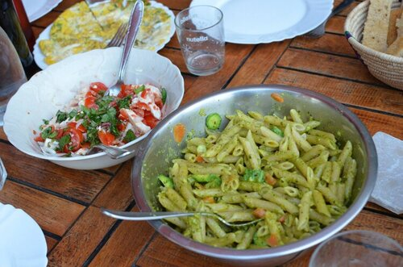
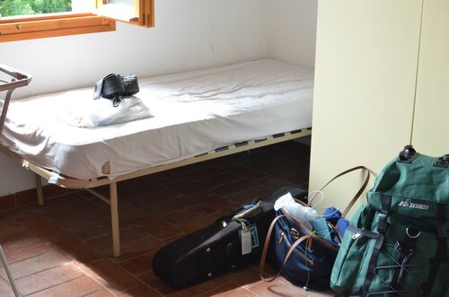
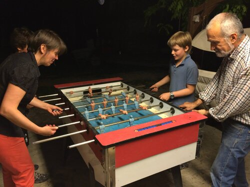
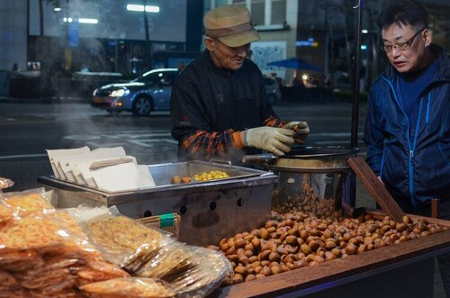

I love working closely with visual systems, language, and code.
I graduated from UC Berkeley, where I studied urban planning and solved product challenges with Berkeley Innovation, a human-centered design agency. Most recently I was at the Koreatown Youth & Community Center (KYCC), connecting the Koreatown community with online Covid-19 resources. Previously I've worked with Beyond, O/M Studio, and NPR.
At this point, you might be wondering how I ended up in tech.

For as long as I can remember, I have always been fascinated by people. In very shallow ways, my early environment allowed me to see the differences in the cultures and world views of others as they were compared to my own.

However, for all the friends with whom I have met and shared a deep connection, these categories were too neat. I was convinced that the wealth of human experiences in the world belied societal stereotypes. So during one of the best years of my life, I took a leap of faith and went on an adventure.

I worked with families that operated farms in Italy, tending to chickpeas and vineyards. Throughout my different stays, my host families took me around the city and welcomed me warmly.

I travelled to South Korea for the first time with my mom and grandma, and learned about our rich cultural heritage. I also got to witness the powerful matriarch of Jejudo female divers.
At the risk of sounding trite, spending time in DC changed my perspective and challenged me in the best way. While my most memorable experience was watching Mac Miller's tiny desk performance, I was endlessly inspired by people dedicating their lives to the civic process and encouraging others to get involved in small ways. I began to see the potential of digital platforms to create these moments of connection.
Since then, these experiences have convinced me that life is so much better when humans support one another and seek to understand the world through diverse voices. I believe that technology can create a powerful sense of community and belonging, and I want my work to reveal our shared humanity. Thanks for listening.